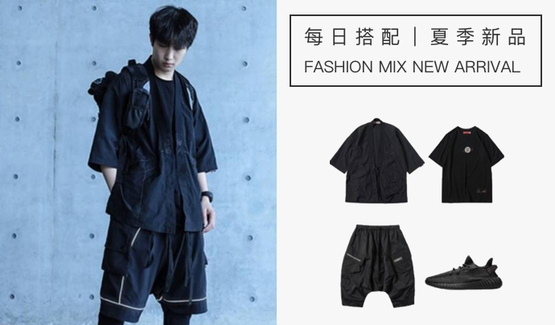
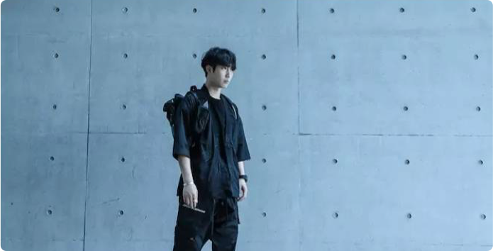

半袖道袍开衫+黑色短袖+黑色中裤
鞋履 : 黑色韦斯特椰子跑步鞋
机能运动是什么？是指具有专业功能设计的户外服，而当下更是与潮流紧密相连；机能风格最早流行于北欧及德国，在一开始，针对登山户外训练所设计的一系列专业功能服，被认为是登顶的时候所穿着的外套。在传统户外运动的衣服中，一般设计会包括：防护层，保暖层 排汗层。当下的机能运动风格，保留了冲锋衣防风防水的技能性，即使雨天也可以直接一件外套闯街头，而且外观也加入了更加丰富时尚元素和色彩，颇受潮人的热捧。
